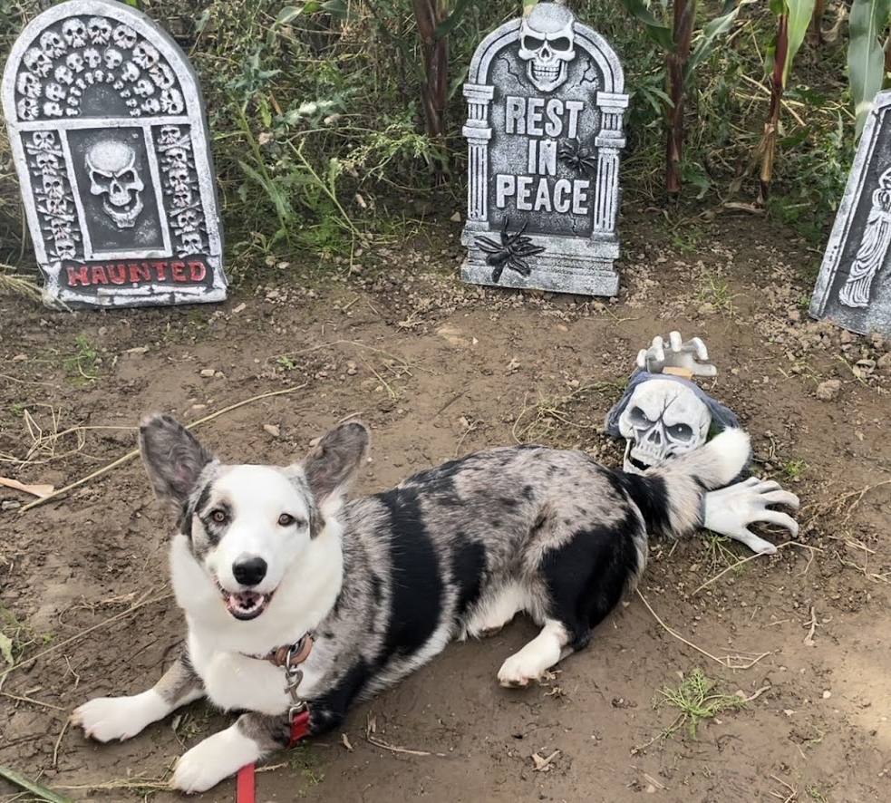

Oprindelse
Gennem adskillige århundreder har welsh corgi cardigan været en effektiv kvægdriver som med sin ringe højde kunne undgå spark fra irriterede dyr. De to corgi-varianter blev tidligere betragtet som én race og blev derfor krydset med hinanden. I 1880'erne ramtes bjergbønderne i Cardiganshire af misvækst og måtte skifte fra kvæg til får, som ikke kunne klare nap i benene. Man krydsede derfor denne egns corgier med collier, og racen fik både et blødere sind og en anden farvevariation end den nære slægtning pembroke.
TIPS OG TRICKS TIL INDLÆRING OG HÅNDTERING
En welsh corgi cardigan er en lidt følsom hund, som har godt af tidlig socialisering, og den tåler ikke nogen form for hårdhed i opdragelsen. Udnyt hyrdehundeegenskaberne og træn i korte, positive sekvenser. Den er meget lærenem og kan blive en god lydighedshund.
MENTALITET
En welsh corgi cardigan er opmærksom og nysgerrig. Rolig, hengiven og meget egnet som selskabshund, også på grund af hyrdehundens fint udviklede samarbejdsvilje. Som arbejdshund drev den kvæget foran sig ved at nappe dyrene i haserne - et instinkt den stadig kan finde på at praktisere også over for mennesker i hurtig bevægelse. Noget gøende.
AKTIVITETSNIVEAU OG HANDLERADIUS
En welsh corgi cardigan er glad for at bevæge sig og altid parat til en behersket leg med børnene eller en rask spadseretur. Udholdende og robust over for alle vejrtyper. Holder sig i relativ nærhed af sine mennesker, som den instinktivt sørger for at holde sammen på.